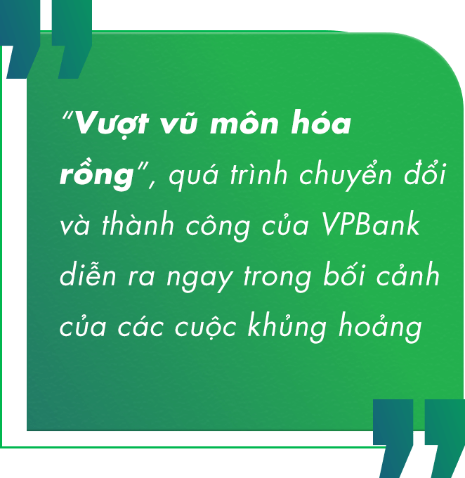

ột lần nữa, ngay quý đầu tiên của năm 2022, thị trường lại dồn sự chú ý vào Ngân hàng Việt Nam Thịnh Vượng (VPBank). Quy mô 11.000 tỷ đồng lợi nhuận hợp nhất ước tính tại nhà băng này chỉ riêng quý I khiến giới đầu tư “xao xuyến”, bởi từ trước đến nay chưa từng có ngân hàng Việt nào tạo được
Thông tin bước đầu, lợi nhuận quý I của VPBank có yếu tố bất thường, một phần từ thỏa thuận hợp tác phân phối bảo hiểm độc quyền với AIA. Trong năm 2021, ngân hàng thương mại này cũng từng tạo khoản thu nhập bất thường từ bán vốn FE Credit.
Nhưng, với gần 30 năm có mặt trên thị trường, những kỷ lục và đột biến tại VPBank như những kết quả trên không có gì là bất thường. Bởi những thành quả đó đã được đầu tư, chuẩn bị, thậm chí phải trải qua nhiều thử thách với nhiều nỗ lực để đạt được.
Với kết quả ước tính trên, VPBank lần đầu tiên giành vị trí quán quân lợi nhuận trong một quý đầu năm của toàn hệ thống ngân hàng thương mại Việt Nam. Đây cũng là lần đầu tiên hệ thống ghi nhận một ngân hàng cổ phần tư nhân đứng ở vị trí này.

Với VPBank, không bất ngờ. Năm 2021, nhà băng này từng tạo một điểm nhấn lịch sử khác: thực hiện thành công thương vụ kỷ lục trên thị trường Việt Nam gắn với một công ty tài chính - FE Credit, thu về 1,4 tỷ USD; tạo cú hích quan trọng để quy mô tổng vốn chủ sở hữu lên tới hơn 86.000 tỷ đồng, ở nhóm dẫn đầu thị trường. Nguồn lực mới và lớn từ thương vụ này góp phần thúc đẩy cho kỷ lục lợi nhuận nói trên trong quý I/2022, và sẽ chưa dừng lại.
Như trên, những thành công liên tiếp và đột biến của thành viên đứng đầu về lợi nhuận này không có gì là bất thường, không “tự đến”, mà gắn sâu với mạch nguồn nỗ lực bền bỉ suốt gần 30 năm qua. Đáng chú ý, hành trình “vượt vũ môn để hóa rồng” diễn ra trong bối cảnh đầy khó khăn và thử thách.
Cũng như nhiều ngân hàng Việt khác, chỉ ít năm sau khi thành lập (1993), VPBank khi đó có tên gọi Ngân hàng TMCP Các doanh nghiệp Ngoài quốc doanh phải trải qua thử thách đầu tiên: cuộc khủng hoảng tài chính châu Á năm 1997.
Cho đến 10 năm sau, đây vẫn là một nhà băng quy mô nhỏ, được xếp ngồi “chiếu dưới” trong hệ thống khối ngân hàng thương mại cổ phần. Vị thế đó càng bất lợi hơn khi nền kinh tế cũng như hệ thống ngân hàng đón ảnh hưởng cuộc khủng hoảng tài chính toàn cầu năm 2008.
Với Việt Nam, ảnh hưởng cuộc khủng hoảng trên mới thực sự ngấm sâu những năm 2010-2011. Lạm phát và lãi suất leo thang, tỷ giá biến động mạnh…; hệ thống ngân hàng bấp bênh thanh khoản, đối diện rủi ro lớn, nợ xấu. Chính trong bối cảnh đó, một ngân hàng vẫn được coi là nhỏ - VPBank bắt đầu một cuộc chuyển đổi quan trọng, có tính quyết định để nay viết nên những mốc lịch sử nói trên.
Năm 2010, VPBank có một cơ cấu mới. Ông Ngô Chí Dũng xuất hiện trong cơ cấu Hội đồng Quản trị và đảm nhiệm vị trí Chủ tịch. Hai năm sau, một nhân vật hàng đầu trong giới lãnh đạo ngân hàng tại Việt Nam có mặt - ông Nguyễn Đức Vinh đảm nhận vị trí CEO VPBank. Nhân tố mới, cơ cấu mới, và đặc biệt với tinh thần và chiến lược mới, VPBank bước vào cuộc chuyển đổi toàn diện ngay trong giai đoạn khó khăn nhất của nền kinh tế và hệ thống ngân hàng nói chung.
Đó là một cuộc chuyển đổi quyết liệt, đầy chông gai. Bởi thay đổi cái cũ, thậm chí là truyền thống, không hề dễ dàng, và nhiều trở ngại. Với sự tư vấn của McKinsey, VPBank bước vào một hành trình đầy táo bạo để tạo nền cho bứt phá về sau.
Cái cũ, thậm chí là truyền thống dĩ nhiên khó thay đổi, khó chuyển đổi, nhất là ở phạm vi toàn hệ thống. Đơn cử như, cho đến những năm 2015-2020, nhiều nhà băng Việt Nam vẫn còn phải quyết liệt để thực sự chuyển đổi cơ chế phê duyệt tín dụng tập trung, trọng quyền đặt tại hội sở chính. Còn VPBank đã quyết liệt làm được từ giai đoạn 2010-2014.
Như ở điểm chuyển đổi trên, người tham gia đề án hồi đó nói rằng, giám đốc mỗi chi nhánh được coi như là “ông vua con” vậy, ở quyền quyết định phê duyệt các khoản vay. Vậy nên, việc thay đổi là một quá trình quyết liệt, nhất là khi còn hạn chế trong tiền lệ.
“Chúng tôi bắt đầu chuyển đổi đầy khó khăn và vất vả, vì những cái mới, những cái như một tờ giấy trắng cho điểm xuất phát ban đầu. Anh em đâu đó khi đó còn những băn khoăn, cả những phàn nàn và lo lắng. Bởi chuyển đổi mô hình luôn là chuyện nhạy cảm, nó đụng chạm rất nhiều tới lợi ích. Nhưng quá trình chuyển đổi chiến lược được triển khai quyết liệt, quán triệt và đồng lòng toàn hệ thống để thành công”, một đại diện của VPBank, người tham gia trực tiếp vào dự án chuyển đổi của ngân hàng ngày đó, nhớ lại.
Chiến lược chuyển đổi sang ngân hàng bán lẻ cũng là một hành trình chông gai khi phải đối diện với quán tính lớn: Một khoản cho vay hoặc huy động bán buôn nhanh chóng lấp đầy chỉ tiêu được giao tại mỗi đơn vị, thay vì phải dàn sức và “sốt ruột” với những món nhỏ lẻ. Song, VPBank đã sớm thay đổi được thói quen này từ quá trình chuyển đổi 2010-2014, để rồi những năm sau đó “Ngân hàng bán lẻ” mới thực sự là yêu cầu, xu hướng gần như bắt buộc tại thị trường Việt Nam. Như vậy, ở khía cạnh này, VPBank đã sớm đi đầu trong hệ thống.
Một điển hình cho hướng chuyển đổi đó, dịch chuyển bán lẻ đó, FE Credit trở thành mũi nhọn mới, bước khai phá mới tại thị trường Việt Nam. Khi mà còn những băn khoăn về một phân khúc “dưới chuẩn cho vay thông thường”, khi mà một cấu phần lớn của nhu cầu còn để ngỏ, VPBank đã sớm có mặt. Vượt qua những hoài nghi và cả quan ngại rủi ro, FE Credit đột phá ở phân khúc tín dụng tiêu dùng và trở thành “con gà đẻ trứng vàng”, chiếm ưu thế thị phần hàng đầu hiện nay.
Với VPBank, thành công thương vụ bán vốn FE Credit đã được gây dựng từ sâu trong quá trình chuyển đổi nhiều năm trước như vậy. Chính thành công của thương vụ này đã góp phần thay đổi cách nhìn về vấn đề đánh giá và định giá trên thị trường Việt Nam ở một phân khúc, một giá trị không chỉ thể hiện ở các con số kết quả kinh doanh của hiện tại.
Cho đến nay, hành trình 30 năm “vượt vũ môn để hóa rồng” tại VPBank đang là một thực tiễn để nhìn lại và đúc kết. Vì sao ngay trong giai đoạn khó khăn nhất của nền kinh tế và hệ thống, họ thực hiện chuyển đổi được; sớm khai mở các xu hướng chuyển đổi trong vận hành và trục hoạt động, dịch chuyển các phân khúc… để thành công?
Trước khi trả lời câu hỏi trên, VPBank đã lại tiến xa ở một xu thế khác: số hóa và chuyển đổi số.
5 năm trước, tiếp xúc với giới phân tích, Tổng giám đốc Nguyễn Đức Vinh đưa ra một so sánh. Tại các thị trường phát triển trên thế giới, đạt tốc độ tăng trưởng cỡ 5% đã là kết quả tốt. Tại Việt Nam, đặc thù thị trường đang phát triển, các nhà băng đều hướng đến các tốc độ tăng trưởng hai chữ số. Làm sao để đi nhanh nhu cầu mà không vấp ngã?
Câu trả lời khi đó được ông Vinh nhấn mạnh, cũng như lý giải cho thay đổi rõ rệt tại VPBank. Chiến lược đi tắt bằng tranh thủ năng lực, kinh nghiệm trên thế giới qua việc chiêu mộ các chuyên gia hàng đầu ở nước ngoài về đảm nhiệm các mũi tiến công còn khá mới tại Việt Nam, khi mà nguồn nhân lực trong nước còn đang xây dựng. Chiến lược tiên phong số hóa và chuyển đổi số giúp tối ưu vận hành để nhẹ bước và bứt phá, tạo những đột phá mới trên thị trường.
Kết tinh số hóa được cụ thể hóa bằng hàng trăm giải pháp, sản phẩm nổi bật trên thị trường, như là nhà băng đi đầu trong phê duyệt tín dụng tự động, thiết lập ngân hàng số toàn diện từ nhiều năm trước và trở nên quen thuộc với một thế hệ khách hàng trẻ, đi đầu về công nghệ định danh điển tử e-KYC, hay gần đây là thương hiệu Ngân hàng số toàn năng VPBank NEO…
Khi mà công cuộc chuyển đổi số bắt đầu bùng nổ tại Việt Nam thì VPBank đã gần hoàn tất mục tiêu chuyển đổi gần 100% giao dịch và hoạt động vận hành trên nền tảng số. Và điều này cũng lý giải cho vị trí dẫn đầu thị trường liên tiếp những năm vừa qua ở chỉ tiêu tỷ lệ chi phí trên thu nhập (CIR) của VPBank, như kết năm 2021 chỉ 24,2%. Với tỷ lệ này, kỷ lục và vị trí số 1 về lợi nhuận quý I năm nay càng trở nên… không bất ngờ.
Dân giàu, nước mạnh. Doanh nghiệp càng mạnh, nền kinh tế càng củng cố thêm những động lực phát triển. Hành trình 30 năm “vượt vũ môn hóa rồng” của VPBank gắn chặt trong mối quan hệ đó, được cụ thể hóa ở tên gọi “Ngân hàng Việt Nam Thịnh Vượng”.
Nhận thức rõ trách nhiệm và sứ mệnh của một trong những ngân hàng lớn hàng đầu đất nước, đầu tháng Tư này, VPBank công bố tái định vị thương hiệu, đặt mục tiêu trở thành ngân hàng tư nhân hàng đầu Việt Nam cam kết hiện thực hóa sứ mệnh “Vì một Việt Nam thịnh vượng”.

“Sau giai đoạn thành công khẳng định vị thế hàng đầu trong ngành ngân hàng, VPBank đã sẵn sàng vươn tới mục tiêu lớn mạnh hơn, hiện thực hóa những tham vọng và hoài bão mà từ 10 năm trước chúng tôi đã gửi gắm vào tên gọi Ngân hàng TMCP Việt Nam Thịnh vượng,” ông Nguyễn Đức Vinh, Tổng Giám đốc VPBank, cho biết.
Thực tế, trong hai năm đại dịch, VPBank đã có rất nhiều hoạt động khích lệ tinh thần “Vì một Việt Nam thịnh vượng”. Cụ thể, ngân hàng đã truyền cảm hứng với giải chạy marathon mang tính biểu tượng của Thủ đô, hay chương trình Digital Music Show series “Vui lên Việt Nam” trong giai đoạn chống Covid-19 cam go nhất; hay sự vào cuộc triển khai trước báo cáo sau khi tiếp sức nhanh chóng nguồn lực cho các điểm nóng chống dịch trên cả nước; sáng kiến vận hành các container xét nghiệm và tiêm chủng lưu động góp phần phát huy hiệu quả trong công tác phòng chống dịch…
Bước sang năm 2022, Covid-19 tại Việt Nam dần được kiểm soát với chiến lược linh hoạt thích ứng của Chính phủ. Tái định vị thương hiệu như là một lời cam kết mạnh mẽ nhất thể hiện quyết tâm mang lại sự thịnh vượng cho khách hàng nói riêng và Tổ quốc nói chung của VPBank.
Bối cảnh thuận lợi hơn, thị trường kỳ vọng bước bứt phá nối tiếp tại VPBank, cũng như cụ thể tại FE Credit với hướng trở lại mạnh mẽ khi nền kinh tế phục hồi và môi trường rủi ro Covid-19 giảm thiểu, cùng thành viên mới Công ty Chứng khoán VPBank Securities tạo đột phá ở phân khúc ngân hàng đầu tư. Bằng cách tiếp tục khẳng định vị thế dẫn đầu ở những phân khúc chiến lược như tài chính tiêu dùng, doanh nghiệp vừa và nhỏ, và tiên phong mở rộng hoạt động ở những phân khúc mới dành cho khách hàng trung lưu, khách hàng ưu tiên, VPBank sẽ cung cấp cho khách hàng các giải pháp tài chính toàn diện nhất.
Kỳ vọng đó càng có cơ sở khi một ngân hàng thương mại gắn với sứ mệnh “Vì một Việt Nam thịnh vượng” đã sở hữu một tầm thế quy mô vốn hàng đầu, đã “vượt vũ môn để hóa rồng” qua các giai đoạn chuyển đổi chiến lược; và đáng chú ý hơn, phía trước và gần kề, kế hoạch bán cổ phần cho nhà đầu tư chiến lược nước ngoài đang trong lộ trình tiếp tục tạo đột biến của lực đẩy mới, với triển vọng nâng quy mô vốn chủ sở hữu lên tới 120.000 tỷ đồng và dẫn đầu hệ thống các ngân hàng thương mại Việt Nam.